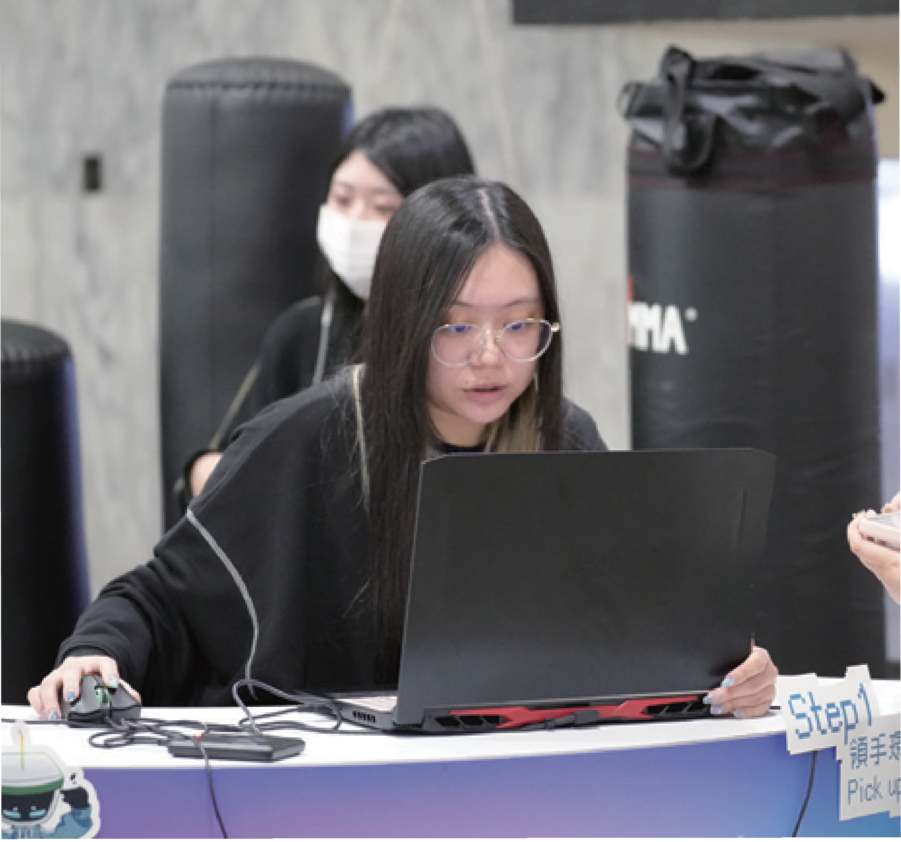
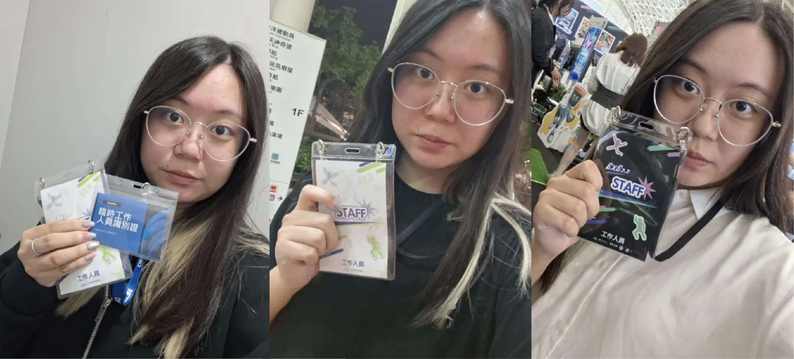

簡廷伃 / PORTFOLIO © 2026
從管理到設計，
從模擬到落地。
從規劃、溝通到執行，讓不同的想法被整合，讓每個專案向前推進。


00 / ABOUT ME
化繁為簡
清晰每一步
ABOUT ME
簡廷伃
臺北科技大學｜互動設計系 大三
以明確的規劃減少混亂，
以有效的溝通降低落差，
以靈活的應變推動團隊前進。
從專題組長到活動總召，
持續累積團隊管理、跨組協調與現場執行經驗。
PROJECT PLANNINGTEAM COORDINATIONCREATIVE THINKINGVISUAL COMMUNICATION
01 / SELECTED WORKS
從管理到設計，
從模擬到落地.
點擊作品卡片，查看我的專案背景、個人角色與執行過程。